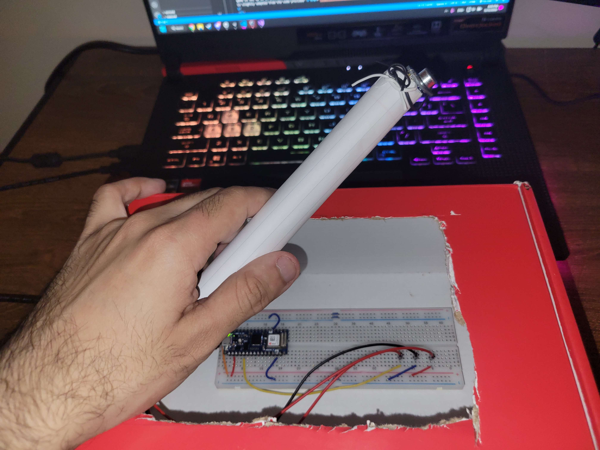
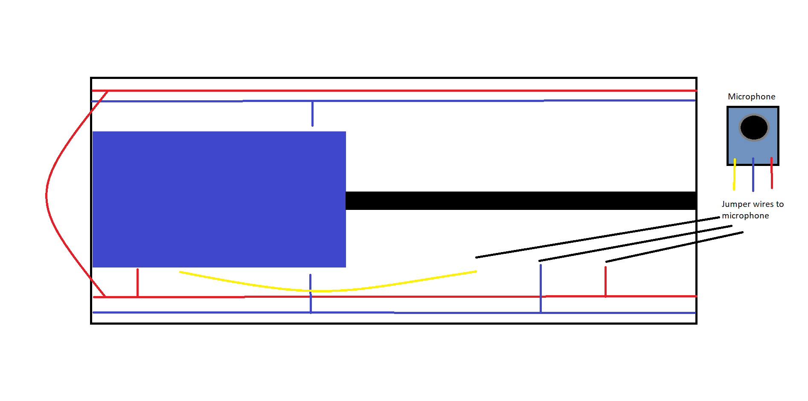

Voice Attack
A project for serial communication via voice between Arduino and Unity
For my final project in physical computing, I wanted to create a second small game in Unity. This game would also be controlled by an audio control that sends information to Unity via serial communication. The serial output from the device would contain a single value representing an audio frequency. This frequency value would be interpreted by a game in Unity to perform actions. This would give the effect of the game being activated or controlled by the user's audio. As usual, I utilized the documentation for my Arduino Nano 33 Iot. I ran into a many difficulties when creating this project.

The board has a single control. There is an audio input that is affixed to a tube of paper to replicate a hand microphone. The frequency from this microphone is sent to the serial port when the volume inputted through the microphone reaches a specific threshold. This frequency is interpreted by Unity as a vertical force to add the the player. The higher the frequency, the faster the player will rise. In Unity, the game is set up as an infinite-runner-esque platformer where the player controls their upward velocity with the pitch of their voice. The arduino code is slightly adapted from the code provided here.

The first major issue that I ran into was the timeout window. Initially, I wanted to make the timeout window longer to ensure that reading from the serial port would line up with the framerate of the game. However, the issue with that was that objects tied to this refresh rate would move significantly slower than others. This was becauses of the reduced framerate due to the timeout window. To fix this, I decided to significantly reduce the timeout window. The game now posts timeout errors due to the arduino's slow posting to the serial console, but it works a lot faster.
I am decently content with how the project turned out. I had wished to add more controls to my makeshift microphone, but I ran out of materials to make additions to it. I only had one more jumper wire, so I couldnt add anything to the microphone, since I would require two jumper wires. Besides that, I am glad that I was able to make a responsive project from the initial version. My code, including the arduino code, can be downloaded here.